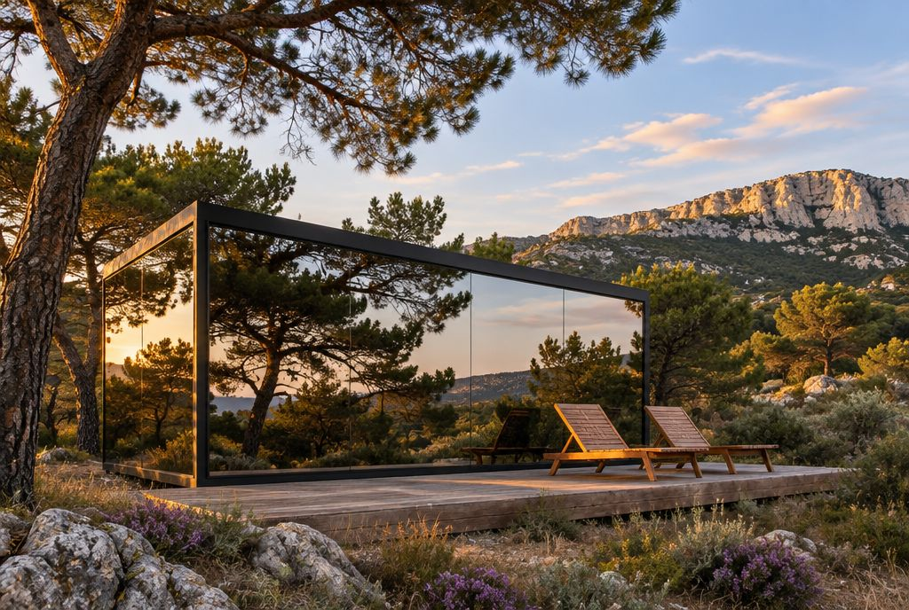

Visuel d'ambiance généré par IA.
Formule 1 · Le Pilote
80 à 105 k€
Une maison miroir, un sauna panoramique, un bain froid
Un seul logement de 18 m², du type MODO ONE, chez un domaine viticole qui accueille déjà du public. Il sert à mesurer le prix que les clients acceptent avant d'investir plus.
| Poste | Source | Budget |
|---|---|---|
| Maison miroir d'entrée de gamme, 18 m², module seul | relevé | 40 à 65 k€ |
| Transport, grue, fondations, raccordements, terrasse, climatisation | estimation | 25 k€ |
| Sauna tonneau panoramique 6 places, bain froid simple, douche | relevé | 13 à 15 k€ |
| Total | ≈ 80 à 105 k€ |
48 k€Recettes par an en 3ᵉ année, hypothèse médiane
+12 k€Excédent d'exploitation médian, avant emprunt et salaires
−2 k€Le même excédent en hypothèse prudente
À retenir : c'est un test, pas un revenu. Moins de 20 m², donc une simple déclaration préalable si le terrain l'autorise.